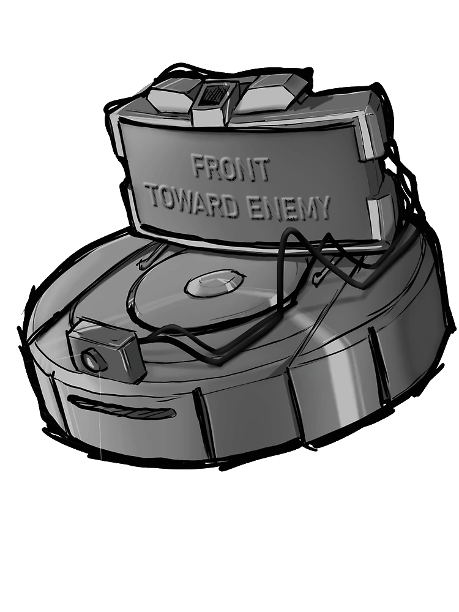

Moderation and AutoMod
Warnings, timeouts, kicks, bans, cases, message cleanup, filters, escalation, anti-raid protection, audit logs, and delegated bot managers.
One bot. Your server. Your rules.
Server Roomba combines moderation, tickets, verification, roles, automations, community tools, and privacy controls in one command-first Discord bot. Everything is configured inside Discord with slash commands.

Built for real communities
Warnings, timeouts, kicks, bans, cases, message cleanup, filters, escalation, anti-raid protection, audit logs, and delegated bot managers.
Multiple ticket types, intake questions, support roles, staff notes, replies, transcripts, history, and configurable ticket panels.
Rules and terms acceptance, member verification, autoroles, sticky roles, reaction or dropdown role menus, welcomes, goodbyes, and birthdays.
Suggestions, polls, giveaways, tags, autoresponders, scheduled messages, starboard, counting, custom embeds, and optional XP and levels.
Give Server Roomba a server-specific nickname and customize the tagline shown in its help overview.
Member data controls, secret-free configuration exports, server-isolated storage, retention cleanup, automatic backups, and server data deletion controls.
Start inside Discord
/setup doctor /module list /help
What Server Roomba processes, why it is needed, and the controls available to members and server owners.
Open page → Using the botThe rules and responsibilities that apply when inviting, configuring, or interacting with Server Roomba.
Open page → LifecycleA plain-language schedule for operational records, server removal, backups, and member requests.
Open page → Get helpHow to report a problem, privacy concern, security issue, or abusive use without exposing sensitive information.
Open page →Your information
/privacy data /privacy export /privacy delete